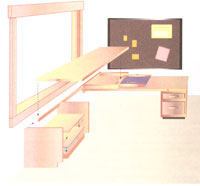
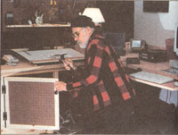
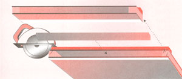
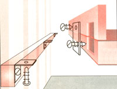
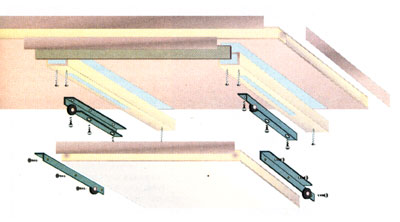
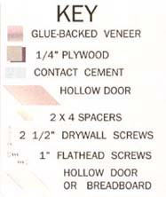
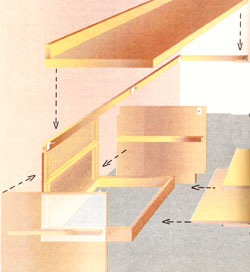

DO IT YOUR SELF
One of the very few things I liked about working in a city was office desks arranged in an "L" shape with room for papers, a typewriter (now a computer), a drafting table, and plenty of storage all around. I wanted one for my home office, but a country-compatible wooden desk costs $1,500 new, half that used. Even a well-used, ugly, institutional-gray metal desk was beyond my meager means. So, recalling my student days, I designed my own using hollow doors hung to close off rooms in almost every house built since the '50s. Made from sandwiches of 3/32" plywood glued on a 1 3/8"-square wood frame, they are light and strong. New (without hinge-insets or latch-set holes cut in them), they are flat and smooth and cost $20 to $30 from any lumberyard. You can support them on customized, simple supports, and have a sizable office desk for under $100, with a few handy drawers and extra shelves in the bargain.
Make a modem desk and typing/computer console from hollow doors for under $100.
The Plan
The key to quick, easy, and sturdy assembly is to arrange two doors at a right angle in the corner of a room so you can fasten their back edges to the wall rather than try to build the rigid framework and rock-solid leg supports needed by freestanding furniture. Best is to arrange at least one desk-the one you will sit at most of the time-facing a window. Most ergonomic is to locate the right angle where the two desks meet to the right of your chair if you are right handed. That way you have a full-length work surface to your best side.
Fastening a desk to the wall is unconventional-making it a semibuilt-in-and requires you to put a few holes into the walls. For some reason, people who will "cheesehole" the walls to put up curtain rods or pictures recoil at the idea of fastening a desk to the selfsame wall a few feet lower.
So, you might be tempted to try to support the desks on legs made for doordesks. Of turned wood in several heights, they are sold in most building supply outlets. Legs fasten to the underside of doors with steel plates that screw onto the bottom. The plates have threaded holes in them and the legs have threaded metal studs pressed into the ends that screw up into the holes. I've tried these legs several times, and find that they invariably unscrew on their own and become wobbly, and you contend with a shaky desk for ages.
Much better-and a more efficient use of the under-table space than legs-is to support the open ends of the doors with ready-built filing cabinets or homemade or purchased cabinets or shelf sets.
Fastening doors to the wall is seldom anything but a psychological problem in country homes; the doors' rear edges rest on long, thin boards (1 x 2s-measuring an actual 3/4" thick and 1 1/2' wide-are cheapest) held to the wall with three or four screws. The office is usually located in a back room of a big old country housefew of which have decor so sacred to prohibit a half dozen screws through the old wallpaper and plaster and into the wall studs. Even in freshly decorated walls, the few screw holes are low enough down that they'll be hidden by furniture if the office is ever moved (see illustration below).
The doors overlap in the corner, so one will be at a low typing height and the other at a more comfortable writing and paper-shuffling level. Height can be maintained at open ends by building spacers to fit between the door and the filing cabinets, shelves or whatever endsupports you employ.
Optional added furbelows that I have built into door-desks at one time or another, and that are shown in some of the following illustrations, include:
a simple plywood cabinet with shelves and (optional) doors. You can build your own or get one ready-made by stacking those colorful $7 to $15 plastic milk crates found in any WalMart, or $15 to $30 wooden boxes made for modular furniture and sold at "unfinished" outlets. drawers (homemade or purloined from old or unused wardrobes or drawer sets) held under the table, with ready-made metal slide sets that cost about $5 from most building supply outlets or woodworkers supply stores or catalogs. a sliding pencil drawer in the space between overlapping doors in the corner. a keyboard shelf mounted on drawerslides under the table where the computer sits.
The Power Seat
First, however, pick the most comfortable office chair you can find and afford. It should have a seat/back angle of 90° or a bit more to force you to sit in an upright, "spine-healthy" position. It should be height-adjustable so you can sit with your feet flat on the floor rather than dangling. (It can adjust in any way:expensively, with a screw-threaded center post for infinite variability, with adjustable casters, or cheaply with a pin through holes in the pedestal.)
The chair back should support the small of your back rather than the shoulders. You may find that a good secretary's chair with a small, adjustable back pad forces you into a more upright position-which is significantly less luxurious, but much better for your spine than an exec utive's chair that you can loll back in to put your feet on the desk.
Layout
Building a desk from scratch, you can arrange it at any level you choose rather than having to accept the one-height-fits all of commercial desks. Adjust your chair (or if the perfect chair is still a dream, add pillows to the seat of a regular desk or table chair) until, with back straight, chin up, and rump firmly against the chair back, your feet are comfortably flat on the floor.
Now, while still sitting in the chair and without reference to any table, arrange hands and arms in the most comfortable typing or writing position. Keep your wrists straight. With a steel tape or yardstick, measure the distance from the floor to your fingertips. Subtract thickness of your keyboard from that height and jot it down. Now measure the distance from the floor to the bottom of your elbow. If there is a great difference, you may be angling your arms (or usually your wrists) up or down too much. Alter your arm angle to match the elbow height and see if this isn't better.
Theoretically, the top of your keyboard should be the same height above the floor as the bottom of your elbows. This distance (minus the thickness of the keyboard) is the optimal height for your typing-table top. If it is wildly different from the height of tables you've been working at all your life, don't be a bit surprised. Society has been trying to mash us all into the same configuration since we all had to sit at the same size desks beginning in first grade.
But this is a custom-made office, build it to fit and satisfy you, and not the Department of Education. Test your calculations by stacking boxes or whatever, and typing at the new height for a while.
If more than one person will be using the table, measure both (all) and see if the differences can be compensated for by adjusting chair height or using more than one chair. Otherwise, find a height that offers the best compromise. Don't be a martyr though; after all, this is your office.
Locating Table Supports
ATTACH TO WALL
1. Fasten horizontal support board to vertical wall studs.
2. Connect door/desktop to backboard with flat brackets (inlet for best fit to wall).
3. Fasten door to support with "L" brackets at ends and middle of door.
Scribe the typing-top height on the wall that will host the typing table. Make another mark the thickness of your table (usually, 1 1/3") below it. This will be the height of the top of your typing table support board and the height that you must make the end supports, file cabinet, shelves or whatever.
With a carpenter's level and long straightedge or chalk line, mark a level line at the measured height extending out from your corner, and as long as your table (78" or 80", unless you shorten it yourself).
Use a magnetic stud finder to locate nails in the vertical beams (studs) in the wall and mark their locations on the line. Now, use a power driver and drive 2 1/2" or 3" drywall screws through the wall into studs to fasten an unwarped length of 1x2" pine to the wall, with the board's upper surface even with the line.
At the corner, use the level to mark a line on the other wall obtaining 90° from the first line. This is where you will place the board to support the end of the typingtable door. Cut a length of 1x2 as long as the door is wide (less the thickness of the board already attached to the wall) and fasten to studs. If less than two studs are located under this short strip, use a "molly" (a wall anchor) to secure a second screw firmly behind the paneling, wallboard or lath and plaster (see illustration below).
To secure the door to the boards, fasten fiat "L" brackets-out-jutting faces even with top edge of support boards-to the support board. Locate one at the end of each support board and one in the middle of the long support board under the center brace inside the hollow door (tap the door to confirm the brace's location-it's where your tap becomes least hollow-sounding. Measure distance of brace from ends of the door and locate the bracket the corresponding distance from ends of the support board.
Place the cabinet, file drawers, or shelving that will support the free end of the door. Fabricate spacers as needed to raise the top of the cabinet or file drawer to the same height as the top of the support board. You can build a box from 1x2s, lay in strips of wood, pile on bricks or blocks or whatever suits your fancy. Just be sure the top surface of the spacer is level and even with the short support board on the far wall so the door won't wobble. To assure the spacer stays put, use contact cement to glue small cleats on top of the cabinet and underside of the door, glue on strips of Velcro, or set keeper screws into the wood so the spacer won't move.
As the photo shows, my window is located toward the end of the table. If I'd supported the door with a filing cabinet, my chair would have been pushed to the left so far I'd have been looking at the drapes. So, I fastened a length of 1x2 and "L" brackets (same as on the far wall) on the back of a sturdy folding bookshelf, loaded the bottom shelves with my heaviest tomes and stacks of magazines to give it weight, and attached the door to that. I am right-handed, so this is the reverse of how the desk should be arranged, but I need to see the woods and the water a whole lot more than I need to have pencils at hand.
The Second Table
The other table, which I use for drafting, is more conventionally arranged, and there I do need to reach out for pencils and drawing angles and all. I set this table at a height that would let the drawing board rest at the best angle and height for me. Arrange yours at the height that's best for what you do.
You'll note in the photos that I put my filing cabinet under the corner of the desk. In my work pattern-going from computer to drawing aboard-that's dead space, and I never scoot a chair under it. You may find that the corner is key to you work flow-and the files (if you use them) can go to support an open end of one table.
Affix the second door the same way you did the first, with a 1x2 along the long wall and at the closed end (unless the second door rests atop the first, as mine does), and a freestanding cabinet or whatever at the open end. If window casing or other molding interferes with a clean run of 1x2, you can apply it in strips where the molding isn't in the way. Double the 1x2 or fabricate shims or spacers to bring it out from the wall if more depth is needed to get the support out beyond the molding.
If a molding or uneven walls push the door out so far from the wall that there is a space at the rear (as is the case with my typing table), pencils and such will forever want to roll off and get lost in the clutter on the floor under the desk (and you will stack boxes and books and other stuff there). You have three choices: 1) notch table or molding to inset door to rest flat against the wall; 2) trim long strips of wood to fill open spaces between rear of door and wall; or 3) attach a thin backboard to the rear of the door. I did the latter, fastening a strip of 1x2 with flat brackets. (See the illustration to visualize how to solve these problems.)
Modifying Door Length
You may want to shorten a door. It's easy so long as you take precautions to keep the thin plywood from splintering. One way is to use a thin, small-toothed handsaw. Wide-bladed Japanese saws (that cut on the pull stroke) are best if you have patience and learn the proper touch. Operating a Japanese saw takes the hands of a violinist using a bow, so practice on some scrap wood before tackling the door.
An electric circular saw with a plywood-cutting blade is faster. With a right-angle steel, mark the sawcut carefully all around the door-on the sides as well as top and bottom.
A circular saw blade revolves away from you, which means that it rotates up into the bottom panel of the door, moves through the void in the door and bangs upwards into the lower face of the upper surface. All plywood tends to splinter, and the thin, unsupported, and flexible panels of a hollow door will splinter worse than most. To minimize this, turn the door with the best surface (the one you want on top) facing down. Put a strip of masking tape along the scribe line to minimize splintering. On the upper face, clamp or hot-glue a strip of thin wood over the line, so the blade will have some thing to press the thin ply against as it revolves. Attach another strip to the left of and parallel to the first, alongside so that the saw base has a firm, level support. Using lines on the sides of the door, rescribe the saw line on the top surface.
For the best and straightest kerf (sawcut), clamp a straightedge or straight board to the left of the saw's baseplate to guide it in the cut. Now, align the saw level and straight, enter the cut very deliberately, and move the saw carefully and very slowly. Support the cut off end of the door at the end of the cut to keep it from revolving off, binding the blade or tearing the ply.
The hollow end of the door will be gaping open. Best workmanship is to saw a length of 2x4 or other soft pine board to precise dimensions to plug the hollow end. Coat top and bottom with wood glue and insert into the void, aligning carefully. Place stout boards top and bottom of the door end and clamp till glue is dry. Use at least three clamps. Tighten till glue begins to ooze out, but not so tight that it is all forced out. When glue is dry, remove clamps and smooth the plug even with the plywood, if need be with a hand plane set to cut shallow (the plywood won't plane.) Sand with sheets of sandpaper stapled tightly to long boards to get the most even surface.
The cut end will most probably be hidden away forever in the closed corner of the desk, however, and you can get away with a crude end-plug. I have been known to cut a board to plug the opening, tap it in, and fasten it with a couple of staples along both edges. Sloppy, but I'll never tell.
Finish
A desk gets hard use and deserves a tough finish. Tung Oil and other natural finishes are fine for solid-wood dining room sets, but plywood is glue under a very thin veneer of wood, and oils soak in unevenly. An oiled ply surface can remain greasy-and the oil can soak into your papers. Best is to apply a floor finish.
I treated all of my desk-pine as well as ply-with a Danish walnut stain, brushing on and wiping off till I got the desired depth of color. Then I applied a satin fin ish polyurethane varnish-two coats of gloss finish followed by two coats of satin, with a light sanding between each. Modern posy goes on so smoothly that a brush application looks like it has been spray-painted.
BUILD A CABINET
This cabinet is designed and built after you are sure of your desk's height. The base is a simple rectangle of 2x4s screwed together, capped with the plywood lower shelf and trimmed in front with pine or more plywood. Sides are built up from pegboard and 1"-thick shelving (as in "Build the Seed Starting/ Planting Bench of Your Dreams" [July, #150] or as below), which is heavy but sturdy enough to stand up on its side without framing. Cleats and trim are scrap 1x2 left from securing the desk and shelves can be pine boards or more plywood.
Unless you are feeling strong enough to maneuver 4x8' sheets of 1/2" plywood, and have a full-size pickup truck to carry it in, buy 4x4 half-panels-or better, 4x2 quarter panels precut from stock 4x8s by a large home-improvement center.
Dimensions
You will have to design the cabinet to fit your desk. Height of the cabinet equals distance from floor to the bottom of the desk; the depth equals the depth of the desk less an inch (less 1 1/2" if you plan to trim the front or build doors). It makes a betterlooking base and avoids constant kicking if you remove the notch at the front bottom of the sides to have an inset kickboard. The 2x4 base can be any width you want the cabinet to be. Depth is same as the bottom edge of the 1/2"-plywood sides.
Sides
1. Cut the 1/2" plywood sides to height and depth (less an inch of inch and a half) of desktop.
2. Lay the sides side-by-side with inner surfaces facing up, inner edges touching, and upper and lower margins even. With screws long enough to go through cleats and bite into, but not go through plywood (1" or 1 1/4"), fasten the shelf cleats and rear cleats to each.
Base
1. Cut the four base boards per the drawing from 2x4s. Fasten with 1 1/2 drywall screws. Be sure the rectangle is square at all corners.
2. Fasten the bottom shelf on top of the base with 1" screws.
Attach Sides to Base
1. Pilot drill and countersink holes at corners and every six inches along the bottom of the side boards.
2. With 1" screws, fasten sides to base, but don't tighten all the way.
Cut and Attach Rear Panel
1. Measure inside of cabinet and cut a back panel to fit from thin plywood.
2. Drill small pilot holes through ply and fasten the back board to the cleats at rear of side boards with glue and small finish nails.
Even Up, Place Shelves, and Trim
1. Place cabinet under table, square up all around, and slide thin shims of wood under base as needed to correct any wobbles due to uneven floorboards. Using contact cement, glue keepers to underside of table, hard-flush with inner surfaces of plywood side boards.
2. Measure to fit and cut middle shelf or shelves. Place on cleats inside the cabinet.
3. Cinch all screw-fasteners tight.
Trim
1. Following illustration, fashion face-trim boards for top, bottom and sides of cabinet opening from 1x2 pine and attach with wood glue and finish nails. If desired, fashion a door-bigger all around by a half inch than the cabinet opening-from pine boards or plywood. Attach with offset hinges and a magnetic catch. Select a pull handle to match the hinge set, drill a hole through the door and bolt the pull on.
WIRINGTHE OFFICE
Computers, modern telephones and other delicate electronic office machines prefer clean, uninterrupted electric current. Most of them must be grounded as well, which means that old-fashioned two-prong outlets are not adequate. Plus, they can't handle serious voltage spikes, sudden bursts of energy caused by lightning strikes, generator startups, and other anomalies down line.
The best way to provide even, safe, grounded power is to have a separate hi-amp circuit with a main-panel surge protector installed by an electrician. This is especially true if your house wiring is old, supplied by a small rural electric system, and subject to frequent brown outs, cutoffs and lightning strikes. It isn't cheap, but better than experiencing frequent crashes with attendent loss of computer data or having to replace or repair powersource damage.
If an electrician is beyond your means and your house wiring is a mystery of tangled wires, taped up connections, and odd fuse boxes so common in old country homes, learn as much as possible about the office circuit. Plug a radio turned up loud into each wall socket in the office and disconnect fuses or circuit breakers till you find the one serving the outlet. Note if any lights go out or clocks go off when each fuse is unscrewed.
Note the value of the fuse or circuit breaker (15, 20 or 30 amps) Write down the amperage draw indicated on the little data tags you'll find on the back of all appliances you'll be using in the office (and any others on the circuit in other rooms).
If the total approaches the value of the fuse, you are asking for an overload, a crashed computer or blown fuse. If this is the case, or if the office is on the same circuit as the kitchen or a furnace, you'll have to relocate the office, call in the electrician or be careful not to operate too many appliances at once.
Assuming that the circuit can handle the load safely, you can provide surge protection with inexpensive wiring strips and surge-protected adapters sold in most telephone and computer supply stores and departments.
If your home lacks modern grounded (three-prong) wiring, you must ground the individual components. Easiest is to connect each instrument through one of those little three-prong-two-prong adapters you'll find in every hardware store. Get adapters with a little greenpainted metal tab on one edge. Connect a length of 12 gauge or larger wire from tab to a bare metal plumbing pipe or outdoors to a buried metal stake (keep soil around stake wet in dry weather to assure good contact).
OFFICE PHONE
You'll want a phone in the office. See the article "The Secret Circuit In Your Phone Line" starting on page 62 for hints on how to run an extension phone, intercom or closed-circuit TV monitor if your tastes are extravagant. To protect your phones (and if you are plugged into the Internet, your modem and computer) from lightningstrike-induced surges on the phone lines, you can install a phoneline surge protector between hi-lines and electronics.
About five years ago I bought a dual-function surge protector that plugged into a conventional two-outlet wall socket and had inlet and outlet jacks for RJ-11 phoneline plugs. It provided surge protection for its four power outlets as well as the phoneline.
One morning the phone was dead through the line running out of the surge-protector, but was fine direct frorn the wall jack-the only clue that the 1-shot surge protector had been activated. I unplugged all the equipment and took the device apart. Sure enough, a fat, red component inside connected to the phone sockets was burned black-having sacrificed itself by absorbing a surge that could have cooked my office equipment.
I had to buy a new phoneline surge protector, but did so gladly. (The power-outlet breaker had not activated, which meant that the strike hit the phone lines only. The little unit-sans phone lines-serves still as a housepower surge protector.)
Tools andMaterials List
Wood Stock:
2 hollow interior doors
2 1x2x8' soft pine for rear supports
2 1x4x8' soft pine for backboards
Plywood:
14'x4' half-sheet of 1/2" interior ply finished both sides.
1 2'x4' quarter-sheet of 1/4" lumber to make spacers, fill hollow doors, and assemble cabinets and shelving (as indicated in text or graphics)
20' of Veneer or 1 1/2" x 1/4" wood strips to edge doors, glue and trimming tools (see text)
Hardware:
6 flat "L" brackets
Self-tapping wallboard-type wood screws in 1", 1 1/4", 1 1/2", 2", and 3" lengths
1 1/2" finish nails
Sanding and finishing materials
Tools Needed (in order)
Magnetic stud finder
Carpenter's level
Long straightedge
Right angle steel
Circular saw with plywood blade, or good handsaw
Electric drill/driver
Contact Cement and/or wood cement
Wood stain and finishing brush, thinner, and rags
HOLLOW DOORSFOR TABLES
Interior doors can be found in vertical bins in your local building/remodeling supply house (or used-with latch holes cut in them-in a building supply recycling center). They come in hollow and solid versions. Solid doors offer no advantage for an office desk, cost $50 to $55, and are too heavy to serve as desks without more support than indicated in this article.
Hollow doors come skinned in birch veneer at $30 to $40, depending on size. Birch is quite hard, light colored, and better to paint than stain. The other common skin is Lauan (Philippine mahogany), which is nicely grained, a lovely nut brown, and stains beautifully. Lauans (though skinned with an imported wood) are cheaper, at $20 to $30 per door.
Most doors are 1 3/8" thick, come in lengths of 78" and 80", and in widths of 18" to 36" in increments of two inches.
|
 |
 |
|
|
 |
|
 |
|
 |
 |
 |